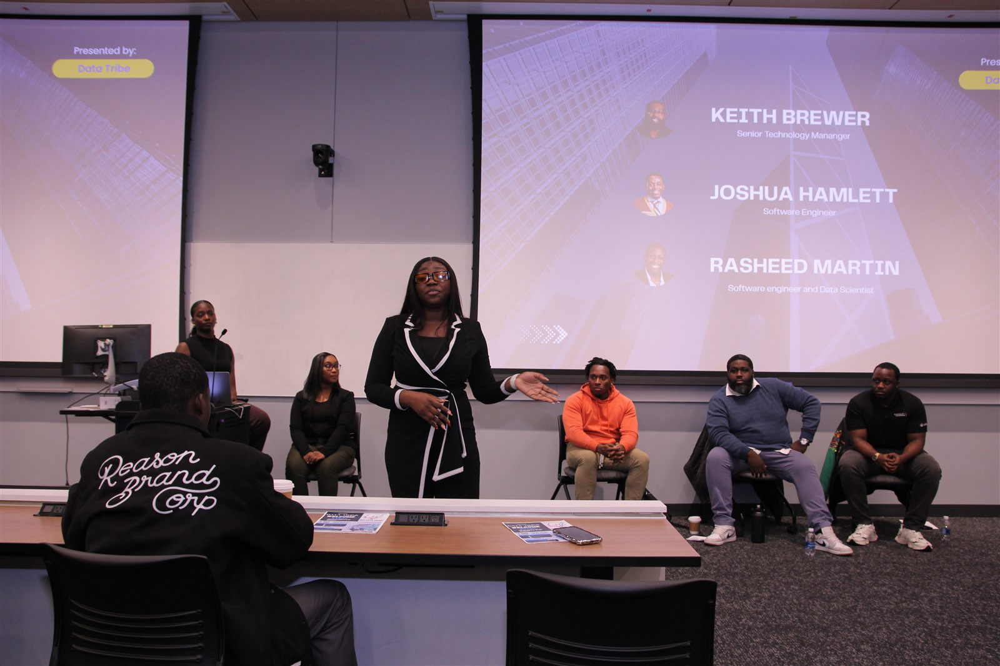
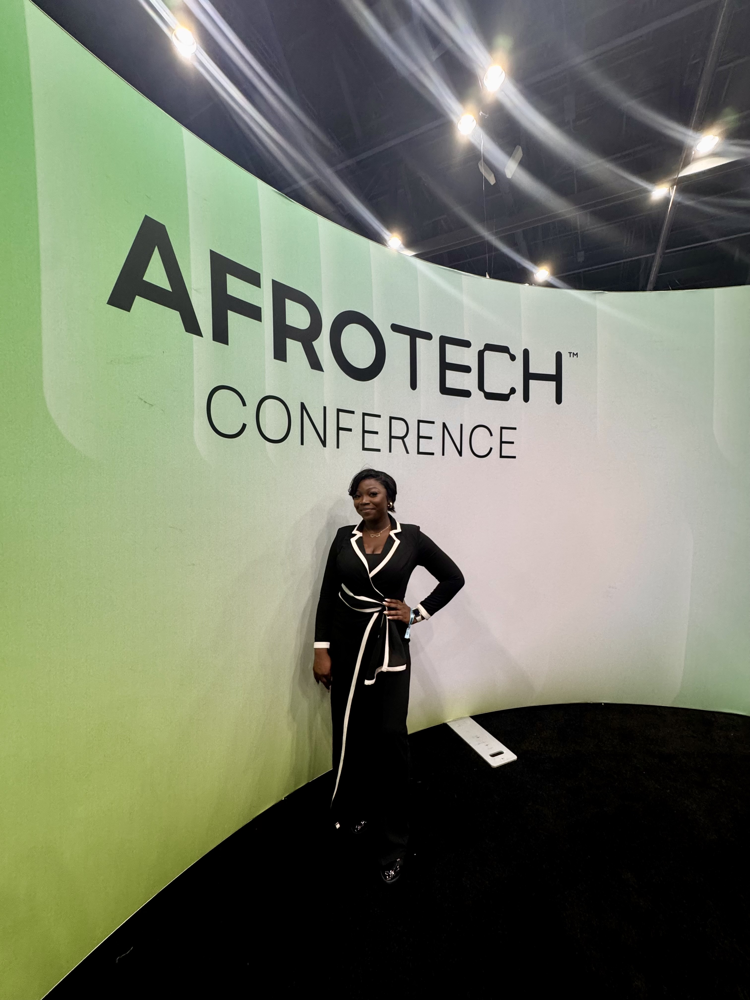
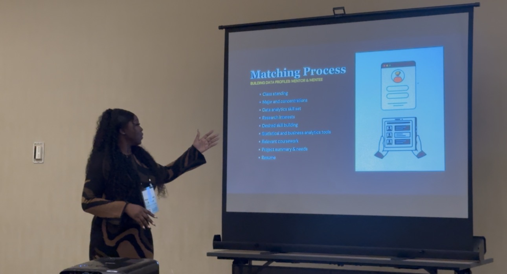
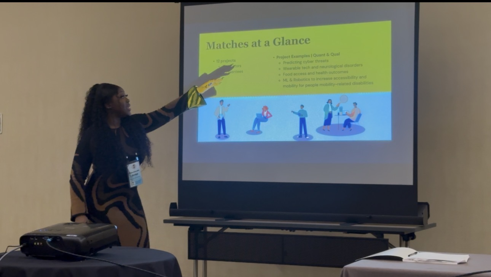

Certificate, AI Business Strategy
Johns Hopkins University, Whiting School of Engineering. 10-week executive program, 6 CEUs. Faculty: Dr. Ian McCulloh, Paul Huckett.
.jpg)
I turn institutional funding and public data into jobs, safety, and opportunity — for students without a pipeline, a county without capacity, and business owners without a budget for consultants. I build the labs, mentorships, and workshops that turn data skills into internships, research, and jobs for students, mostly at HBCUs where that pipeline can't be assumed to exist already. On my own, as founder of NexaFlow Analytics, I build and sell software.
I started in project management in Nigeria's hospitality sector, running market research and digital transformation for a hotel group with a small budget and no room for waste. That's where I learned to make a case with data instead of authority.
I came to Bowie State for an MBA and stayed for the work: first coordinating the Truist DARTT Lab, then managing CDA projects, and since April 2025, running the Center's programs as a whole. Along the way I founded Data Tribe — a student data community I started on my own in 2022 — because I kept seeing students with access to courses and software but no sense of belonging in the field.
"Bibi serves as a program manager for the Center for Data Analytics and the DARTT Lab... Her work has supported more than 250 student engagements, helping students strengthen their data literacy and gain hands-on experience." Bowie State University, Winning Women profile
Speaking at a Data Tribe session with Keith Brewer, Joshua Hamlett, and Rasheed Martin from Northrop Grumman, followed by a case study activity.

Johns Hopkins University, Whiting School of Engineering. 10-week executive program, 6 CEUs. Faculty: Dr. Ian McCulloh, Paul Huckett.
Bowie State University. Served as President of the International Business Club, Oct 2022 – Jun 2023, alongside the program.
Redeemer's University, Nigeria.
Data Analysis with Python — IBM, via Coursera (2023) · Amazon Kinesis Streams & Analytics — AWS (2022) · Advanced Excel / CRM / CompTIA Project+ — New Horizons · Association of Public Data Users — Member



